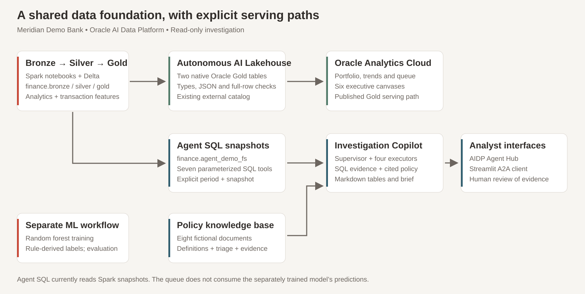
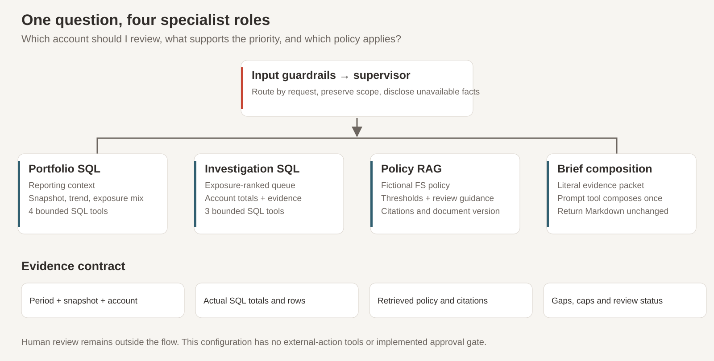

Which account should I review first?
What evidence supports the priority?
Which policy applies?
Demonstration dataset · USD display assumption
Oracle AI Data Platform • Meridian Demo Bank
Which account should I review first?
What evidence supports the priority?
Which policy applies?
Demonstration dataset · USD display assumption
Abhijit Khuperkar | 18 October 2026. Mixed business and technical audience. Follow one monthly investigation from portfolio context to account evidence and policy. Demonstration dataset; amounts shown in USD, a display assumption without FX conversion. No confirmed-fraud, calibrated-probability or realized-loss claim.
Two independent research findings; different survey populations
Lacked or were unsure of suitable data-management practices for AI.
Gartner · July 2024 survey · n=1,203Reported fundamental redesign of at least some workflows.
McKinsey · respondents using generative AIIndependent findings with different populations. Sources and context are in presenter notes.
Gartner, 26 Feb 2025: https://www.gartner.com/en/newsroom/press-releases/2025-02-26-lack-of-ai-ready-data-puts-ai-projects-at-risk . McKinsey, 12 Mar 2025: https://www.mckinsey.com/capabilities/quantumblack/our-insights/the-state-of-ai-how-organizations-are-rewiring-to-capture-value . These findings motivate explicit data contracts and workflow design; neither establishes causation or a measured benefit from this project. Do not invert adoption statistics into disconnected-workflow claims.
Gold data supports analytics and a separate agent snapshot path

See docs/architecture.md and media/diagrams/architecture.svg. Actual implementation: Spark Delta finance Bronze/Silver/Gold; optional publication to native Oracle AILH tables consumed by OAC. Seven current agent SQL tools query finance.agent_demo_fs materialized Spark snapshots. Eight fictional policy documents feed RAG. Separate ML model predictions are not the agent queue input. Oracle SQL tool source options: https://docs.oracle.com/en/cloud/paas/ai-data-platform/aidug/agent-flow-tools.html .
Spark and Delta medallion processing
Raw transaction records
Account, time, type, amount
Reference for transformation
Required-field checks
Time-derived features
Consistent processing inputs
Account-month analytics
Transaction-level features
Reusable analytical products
The separate ML pipeline uses rule-derived labels. Its predictions are not the source of the agent queue.
Four public notebooks preserve the supplied code and markdown, with saved outputs cleared for publication. The separate random forest pipeline demonstrates fitting and evaluation with rule-derived labels: is_fraud = risk_score > 60, where score is randomly generated. Features exclude risk_score. No validated fraud-detection effectiveness follows; representative outcomes and independent model validation are required for a production claim. Source generator is unseeded, so rerun totals differ. Oracle overview: https://docs.oracle.com/en/cloud/paas/ai-data-platform/aidug/overview-oracle-ai-data-platform.html .
Autonomous AI Lakehouse is the analytical serving layer
| Decision | Implementation | Proof |
|---|---|---|
| Connection | Existing external catalog | Configurable catalog + schema |
| Types | Decimal + native JSON | Schema and exact-amount checks |
| Publication | Two native Oracle tables | Counts + full-row multiset |
| Layout | Preserve Delta; native indexes | No Delta clustering in Oracle |
Initial publication verified. Changed-data replacement requires further hosted validation. Index DDL is supplied separately.
Initial publication was verified after a wallet change, with schema, count, decimal, JSON and full-row duplicate-aware comparison. Changed-data replacement remains unvalidated after DATA_ACCESS_LAYER_0068. DDL includes CREATE TABLE IF NOT EXISTS; optional index DDL is supplied, not automatically executed by the catalog writer. Source tables remained unclustered when the runtime rejected retrofit ALTER clustering. See notebook appendix and docs/troubleshooting.md. External catalogs: https://docs.oracle.com/en/cloud/paas/ai-data-platform/aidug/external-catalogs.html .
December 2024 • USD OAC capture 18 October 2026

Screening flags are not confirmed fraud or losses. Frozen OAC reference; do not blend with older agent snapshots.
Reference data/reference-snapshot.json: 12,699 transactions, 4,436 active accounts; USD31,642,312.97 gross, USD20,071,594.45 net; 4,934 score>60 flags,38.853453027797464% count flag rate; USD12,547,752.55 flagged gross. Six AutoFit canvases: executive snapshot, executive brief, activity/risk trends, investigation queue, exposure breakdown, monthly changes. Whole-portfolio monthly comparisons are independent of account filters. Demonstration dataset; amounts shown in USD. Screening exposure is not confirmed fraud or loss. The screenshot is cropped, never reconstructed. The six OAC canvases were captured with USD presentation and rule FS-TRIAGE-1.1 on 18 October 2026. Original numeric reference remains 17 October; no amount rescaling.
Supervisor + four specialist executors • seven SQL tools + RAG + Prompt

Current node configurations and prompts are in agents/. Supervisor xai.grok-4.7; reference executor choices/settings are explicitly recorded there and may vary by tenant. Current Prompt tool argument: evidence_packet, String; it supersedes the earlier setup-notebook evidence_json template. Resolve the reporting period once, preserve snapshot/account scope, retrieve actual bounded evidence rows and applicable FS-POL-001 policy text. A risk_score is not a probability. No external-action tools or implemented approval gate. Guardrail and human-review language do not establish a technical authorization control.
Agent card → deployment → AI Registry → Agent Hub or local application
Discover the registered agent
Test scope and cited answers
Use deployed runtime permissions
AIDP A2A + OCI or OAuth
Independent PAF adapter
Customer branding + title override
Signed transport and a SQL response were verified historically. Fresh hybrid evidence reconciliation remains required.
The author reports successful Agent Hub use and seven prompts. Exported trace covers root only. Historical Streamlit checks verified a signed card, minimal invocation and a SQL response. One hybrid follow-up completed transport but failed evidence reconciliation; fresh hosted acceptance is required. Do not show that prior answer as validated. No populated credentials, real endpoints or session histories are included. Run app from apps/copilot to load theme and secrets. Existing working PAF project is untouched.
A reproducible path for a focused customer validation
Repository: https://github.com/akhuperkar/aidp-financial-investigation-copilot . User guide covers notebooks, OAC, Agent Builder, deployment and the client. Local mocked tests are distinct from hosted acceptance; the tenant CSV remains NOT_RUN until populated. Next: reconcile a fresh hybrid answer; validate changed-data publication; record the chapter sequence and add the final MP4 via Git LFS. Suggested value measurement: time to assemble a review packet and verification rework. These have not been measured by this project. Video and Medium URLs remain pending publication.